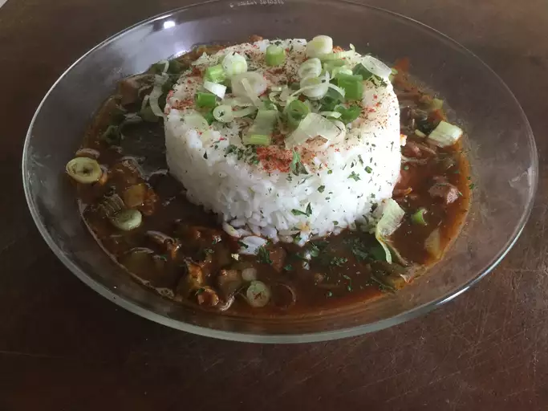

Merwin's Shrimp Gumbo
Description
This is a recipe for a classic, dark brown, shrimp gumbo in true Louisiana Cajun country fashion. Serve over rice. Browning the chicken pieces in the oil used for the roux adds flavor to the dish. I use the cooked chicken for chicken salad. File is added off the heat to thicken the gumbo. If added while the gumbo is still cooking, it may become stringy and unpleasant. File is ground sassafras leaves. It is available in many supermarkets.
Ingrediants
- 1 pound smoked sausage, cut into 1/4 inch rounds
- ½ cup vegetable oil
- 1 (4 pound) chicken, cut into parts
- ⅔ cup all-purpose flour
- 2 cups chopped onion
- ½ cup chopped green onions
- ⅔ cup green bell pepper, finely chopped
- 2 tablespoons chopped fresh parsley
- 1 tablespoon minced garlic
- 2 pounds medium shrimp - peeled and deveined
- 8 cups water
- salt to taste
- ground black pepper to taste
- ⅛ teaspoon cayenne pepper
- 1 teaspoon dried thyme
- 2 bay leaves
- file powder
Steps to Success
- In a medium skillet, brown the sausage over medium heat. Remove from pan, and drain on paper towels to remove some of the fat. Discard fat in pan.
- In a large skillet, heat vegetable oil over high heat. Brown chicken pieces in hot oil. Turn frequently until golden brown on all sides. Transfer chicken to a dish, leaving oil in pan. Set chicken aside, but keep warm.
- Make a roux by whisking flour into the hot vegetable oil. Turn heat down to low. Continue cooking flour and oil mixture, stirring constantly, until it reaches a dark brown color. This may take 30 to 45 minutes; the darker the roux, the better the final gumbo.
- When the roux is a dark brown color, quickly add the sausage, onion, green onion tops, green pepper, parsley, and garlic. Cook over low heat until the vegetables are wilted, about 10 minutes, stirring constantly.
- Stir in 2 cups water and spices. Add chicken parts. Add rest of the water slowly. Bring mixture to a boil, and reduce heat. Simmer for about 45 minutes, until chicken is done and tender.
- Remove chicken pieces, and save for another use. Add shrimp to gumbo; cook for about 8 to 10 minutes more. Remove bay leaves. Taste, and adjust seasoning. Serve gumbo in deep bowls. Sprinkle file powder over individual servings, and stir in.
Click here to go back to the main page